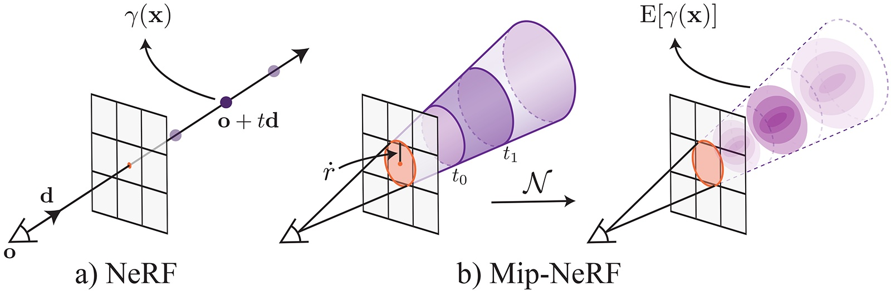

NeRF
Representing Scenes as Neural Radiance Fields for View Synthesis
ECCV 2020 Oral - Best Paper Honorable Mention
1 UC Berkeley
2 Google Research
3 UC San Diego
**Denotes Equal Contribution


Paper
</Code>
Data
We present a method that achieves state-of-the-art results for synthesizing novel views of complex scenes by optimizing an underlying continuous volumetric scene function using a sparse set of input views.

Our algorithm represents a scene using a fully-connected (non-convolutional) deep network, whose input is a single continuous 5D coordinate (spatial location (x, y, z) and viewing direction (θ, φ)) and whose output is the volume density and view-dependent emitted radiance at that spatial location.


We synthesize views by querying 5D coordinates along camera rays and use classic volume rendering techniques to project the output colors and densities into an image. Because volume rendering is naturally differentiable, the only input required to optimize our representation is a set of images with known camera poses. We describe how to effectively optimize neural radiance fields to render photorealistic novel views of scenes with complicated geometry and appearance, and demonstrate results that outperform prior work on neural rendering and view synthesis.
Here are results on our synthetic dataset of pathtraced objects with realistic non-Lambertian materials. The dataset will be released soon.
Here we visualize the view-dependent appearance encoded in our NeRF representation by fixing the camera viewpoint but changing the queried viewing direction.
NeRFs are able to represent detailed scene geometry with complex occlusions. Here we visualize depth maps for rendered novel views computed as the expected termination of each camera ray in the encoded volume.
Our estimated scene geometry is detailed enough to support mixed-reality applications such as inserting virtual objects into real world scenes with compelling occlusion effects.
We can also convert the NeRF to a mesh using marching cubes.
NeRFs can even represent real objects captured by a set of inward-facing views, without any background isolation or masking.
Fully-connected deep networks are biased to learn low frequencies faster. Surprisingly, applying a simple mapping to the network input is able to mitigate this issue. We explore these input mappings in a followup work.
Project Page.
By efficiently rendering anti-aliased conical frustums instead of rays, our followup, mip-NeRF, reduces objectionable aliasing artifacts and significantly improves NeRF's ability to represent fine details, while also being 7% faster than NeRF and half the size. Project Page
In a followup work we explore how meta-learning can be applied to speed up convergence and embed dataset specific priors.
Project Page
We extend NeRF to enable the rendering of scenes from novel viewpoints under arbitrary lighting conditions.
Project Page
@inproceedings{mildenhall2020nerf,
title={NeRF: Representing Scenes as Neural Radiance Fields for View Synthesis},
author={Ben Mildenhall and Pratul P. Srinivasan and Matthew Tancik and Jonathan T. Barron and Ravi Ramamoorthi and Ren Ng},
year={2020},
booktitle={ECCV},
}